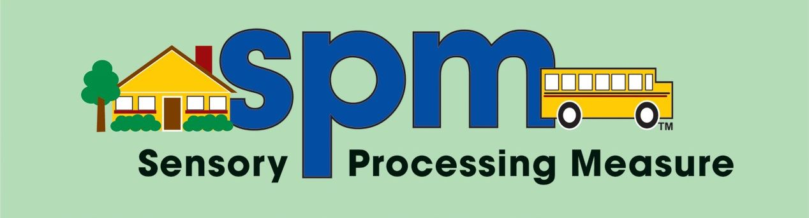

SENSORY PROCESSING MEASURE CASA
| Nunca | Ocasionalmente | Frequentemente | Sempre | VISÃO A criança ... |
|---|---|---|---|---|
| N | O | F | S | 11. Parece incomodada com a luz especialmente luz intensa (pisca, chora ou fecha os olhos)? |
| N | O | F | S | 12. Tem dificuldade em encontrar um objeto quando está no meio de outras coisas? |
| N | O | F | S | 13. Fecha um olho ou inclina a cabeça para trás quando olha para alguém ou para alguma coisa? |
| N | O | F | S | 14. Parece aflita/perturbada num ambiente visual não usual, tal como um quarto luminoso, colorido, mal iluminado? |
| N | O | F | S | 15. Tem dificuldade em controlar o movimento dos olhos enquanto segue um objeto (ex. uma bola)? |
| N | O | F | S | 16. Tem dificuldade em reconhecer semelhanças ou diferenças entre objetos baseando-se nas suas cores, formas ou tamanhos? |
| N | O | F | S | 17. Gosta de ver objetos a girar ou a mover-se, mais do que a maioria das crianças da sua idade? |
| N | O | F | S | 18. Anda em direção a objetos ou pessoas como se não estivessem lá? |
| N | O | F | S | 19. Gosta de ligar e desligar interruptores repetidamente? |
| N | O | F | S | 20. Não gosta de certos tipos de iluminação, tais como o sol intenso, luzes brilhantes, intermitentes ou flurescentes? |
| N | O | F | S | 21. Gosta de olhar os objetos em movimento pelo canto do olho? |
| Nunca | Ocasionalmente | Frequentemente | Sempre | AUDIÇÃO A criança ... |
|---|---|---|---|---|
| N | O | F | S | 22. Parece incomodada com os sons domésticos comuns, tais como o aspirador, secador de cabelo ou o autoclismo? |
| N | O | F | S | 23. Responde negativamente a barulhos altos, fugindo, chorando ou tapando os ouvidos com as mãos? |
| N | O | F | S | 24. Parece não ouvir certos sons? |
| N | O | F | S | 25. Parece perturbada ou muito interessada por sons usualmente não notados por outras pessoas? |
| N | O | F | S | 26. Parece assustada com sons que usualmente não incomodam outras crianças da mesma idade? |
| N | O | F | S | 27. Distrai-se facilmente com barulhos de fundo tais como ar condicionado, frigorifico, luz fluorescente ou cortador de relva? |
| N | O | F | S | 28. Gosta de causar certos sons repetidamente, tais como descarregar o autoclismo? |
| N | O | F | S | 29. Mostra-se aflita/perturbada com sons muito altos e estridentes, tais como assobios, cornetas, flautas ou trompetes? |
| Nunca | Ocasionalmente | Frequentemente | Sempre | TOQUE A criança ... |
|---|---|---|---|---|
| N | O | F | S | 30. Afasta-se quando é tocada levemente? |
| N | O | F | S | 31. Parece não ter uma perceção normal de ser tocada? |
| N | O | F | S | 32. Fica aflita/perturbada com a sensação de roupa nova (lãs, tecidos ásperos, etiquetas)? |
| N | O | F | S | 33. Prefere tocar a ser tocada? |
| N | O | F | S | 34. Fica aflita/perturbada quando lhe cortam as unhas das mãos ou dos pés? |
| N | O | F | S | 35. Parece incomodada quando alguém lhe toca na cara? |
| N | O | F | S | 36. Evita tocar ou brincar com digitintas, areia, barro, lama, cola ou outras coisas que sujem? |
| N | O | F | S | 37. Tem uma tolerância invulgarmente alta à dor (ex. cai e não chora ou vai contra os objetos e não nota)? |
| N | O | F | S | 38. Não gosta de escovar os dentes, mais do que a maioria das crianças da sua idade? |
| N | O | F | S | 39. Parece gostar de sensações que podem ser dolorosas como por exemplo atirar-se para o chão ou bater no seu corpo? |
| N | O | F | S | 40. Tem dificuldade em encontrar coisas nos bolsos, mala, ou mochila usando apenas o toque (sem a visão)? |
| Nunca | Ocasionalmente | Frequentemente | Sempre | GOSTO E OLFACTO A criança ... |
|---|---|---|---|---|
| N | O | F | S | 41. Gosta de provar coisas não comestíveis, tais como cola ou tinta? |
| N | O | F | S | 42. Dá-lhe vómitos quando tem à frente uma comida que não aprecia tal como espinafres cozidos? |
| N | O | F | S | 43. Gosta de cheirar os objetos não comestíveis e pessoas? |
| N | O | F | S | 44. Fica aflita/perturbada com cheiros que as outras crianças não notam? |
| N | O | F | S | 45. Parece ignorar ou não notar cheiros fortes a que as outras crianças reagem? |
| Nunca | Ocasionalmente | Frequentemente | Sempre | CONSCIÊNCIA CORPORAL A criança ... |
|---|---|---|---|---|
| N | O | F | S | 46. Agarra os objetos (lápis ou colher) com tanta força que lhe é difícil usá-los? |
| N | O | F | S | 47. Parece procurar atividades tais como empurrar, puxar, arrastar, levantar e saltar? |
| N | O | F | S | 48. Parece insegura de como deve baixar ou levantar o corpo durante movimentos tais como sentar ou subir para cima de um banco ou cadeira? |
| N | O | F | S | 49. Agarra os objetos (lápis ou colher) tão levemente que lhe é difícil usá-los? |
| N | O | F | S | 50. Parece exercer muita pressão nas tarefas tais como andar pesadamente, bater portas, ou carregar demasiado quando utiliza lápis de cor ou de cera? |
| N | O | F | S | 51. Salta muitas vezes? |
| N | O | F | S | 52. Quando pega num animal agarra-o com muita força? |
| N | O | F | S | 53. Choca ou empurra as outras crianças? |
| N | O | F | S | 54. Mastiga brinquedos, roupas ou outros objetos mais do que as outras crianças? |
| N | O | F | S | 55. Agarra ou empurra os objetos com tanta força que os parte? |
| Nunca | Ocasionalmente | Frequentemente | Sempre | MOVIMENTO E EQUILÍBRIO A criança ... |
|---|---|---|---|---|
| N | O | F | S | 56. Parece ter um medo excessivo do movimento, tal como subir ou descer escadas, andar de baloiço, balancé, escorrega ou outro equipamento dos parques infantis? |
| N | O | F | S | 57. Tem um bom equilíbrio? |
| N | O | F | S | 58. Evita atividades que exijam equilíbrio tais como andar no lancil do passeio ou pisos irregulares? |
| N | O | F | S | 59. Cai da cadeira quando muda de posição? |
| N | O | F | S | 60. Não se protege quando cai (pôr as mãos à frente do corpo)? |
| N | O | F | S | 61. Parece não ficar tonta quando usualmente os outros ficam? |
| N | O | F | S | 62. Gira e rodopia sobre si mesma, mais do que as outras crianças? |
| N | O | F | S | 63. Mostra-se aflita/perturbada quando a sua cabeça é inclinada e retirada da posição vertical? |
| N | O | F | S | 64. Tem dificuldades de coordenação e parece desajeitada? |
| N | O | F | S | 65. Parece ter medo de andar de elevador ou escadas rolantes? |
| N | O | F | S | 66. Encosta-se a outras pessoas ou mobílias quando se senta ou se tenta levantar? |
| Nunca | Ocasionalmente | Frequentemente | Sempre | PLANEAMENTO MOTOR E IDEAÇÃO A criança ... |
|---|---|---|---|---|
| N | O | F | S | 67. Tem um desempenho inconsistente das suas tarefas diárias? |
| N | O | F | S | 68. Tem dificuldade em perceber como transportar vários objetos ao mesmo tempo? |
| N | O | F | S | 69. Parece confusa sobre como arrumar os materiais e colocá-los nos seus lugares corretos? |
| N | O | F | S | 70. Tem dificuldade em desempenhar as tarefas na sequência certa tal como vestir-se ou pôr a mesa? |
| N | O | F | S | 71. Tem dificuldade em completar tarefas com muitas fases? |
| N | O | F | S | 72. Tem dificuldade em imitar ações demonstradas, tais como jogos de movimento ou canções com movimento? |
| N | O | F | S | 73. Tem dificuldade em construir por cópia de um modelo um jogo com legos ou blocos? |
| N | O | F | S | 74. Tem dificuldade em ter ideias para jogos ou atividades novas? |
| N | O | F | S | 75. Tende a jogar sempre o mesmo jogo, em vez de mudar de atividade quando lhe é dada a oportunidade? |
| Avaliação | Pontuação | Comentário |
|---|---|---|
| Participação social | ||
| Visão | ||
| Audição | ||
| Toque | ||
| Gosto e Olfato | ||
| Consciência Corporal | ||
| Movimento e Equilibrio | ||
| Planeamento Motor e Ideação | ||
| TOTAL |